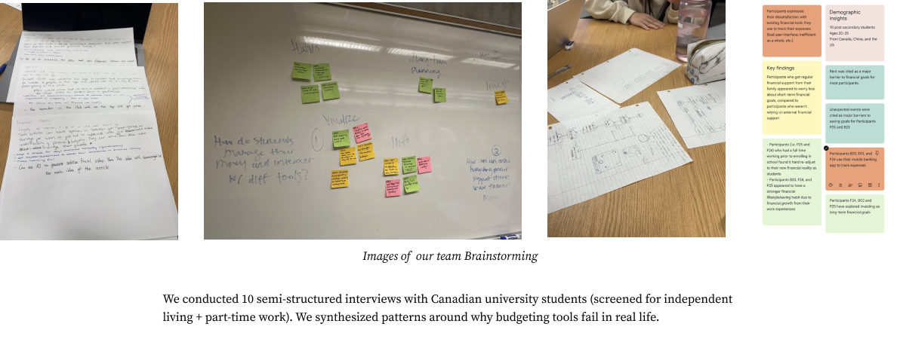
Interview notes, affinity synthesis, and early sketches
End-to-end UX · Academic Team Project
Reducing expense-logging friction through a scan-first flow that automates the tedious parts without taking correction and control away from the user.
01 · Problem framing
For university students managing fluctuating income, textbooks, daily purchases, and tight schedules, the perceived benefit of logging an expense often did not justify the effort of entering amount, date, merchant, and category.
Reduce effort first. Budgeting follows.
I helped plan the research, synthesize the evidence, and coordinate the team around one core task. Ten interviews showed three recurring patterns: manual entry felt like homework, students wanted tools that required less ongoing attention, and tracking often stopped during busy weeks.

Interview notes, affinity synthesis, and early sketches
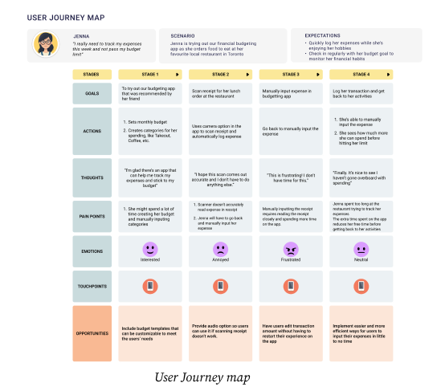
Journey map locating the point where effort interrupted the habit
02 · Research to decision
Research indicated that manual entry felt disproportionate to the value students received. I sketched the first complete low-fidelity flow, used team critique to refine its logic, and helped establish receipt scanning as the shared core concept.
I proposed voice input after reviewing accessibility guidance. It became an additional path for users who may find photo or manual entry difficult, while manual correction remained available when automation was inaccurate.
03 · Core interaction
The high-fidelity prototype replaces one long expense form with three entry choices: photograph a receipt, describe the expense by voice, or edit it manually. Photo and voice reduce typing; manual entry remains available when automation is not the right fit.
The key product decision is the review step. SnapBudget shows what it inferred—merchant, category, amount, and date—before anything changes the budget, so speed never removes user control.
Photo, voice, and manual entry are presented as equal starting points.
Receipt guidance or a spoken sentence gathers the needed information.
Parsed details stay editable before the user explicitly confirms them.
Updated expenses and savings make the result of the action immediately visible.
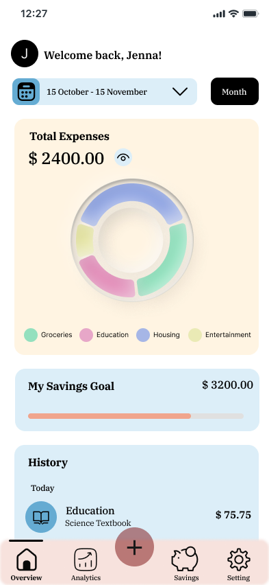
01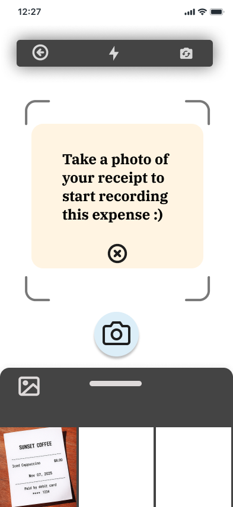
02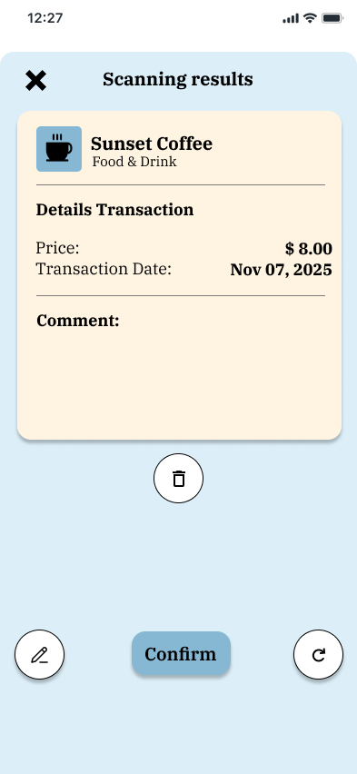
03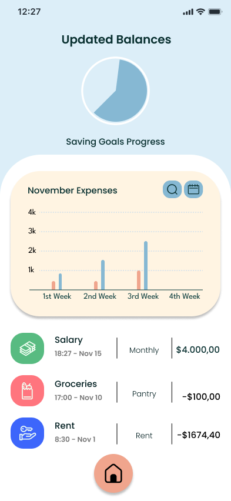
0404 · Validation
Ten moderated think-aloud sessions shifted attention from speed alone to comprehension. Participants liked having photo, voice, and manual entry, but several were unsure what each option did and whether typing would still be required.
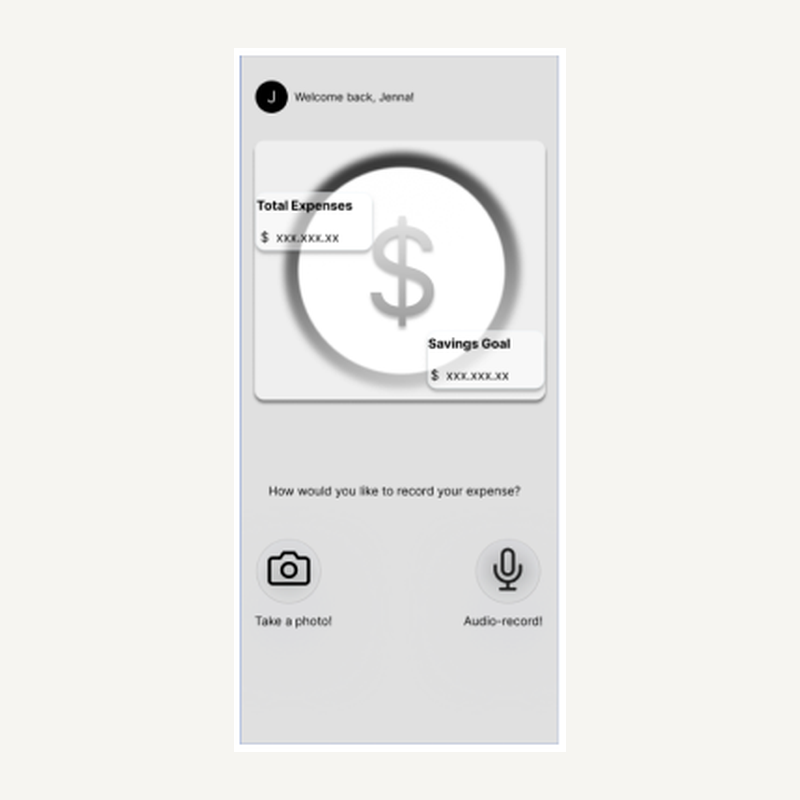
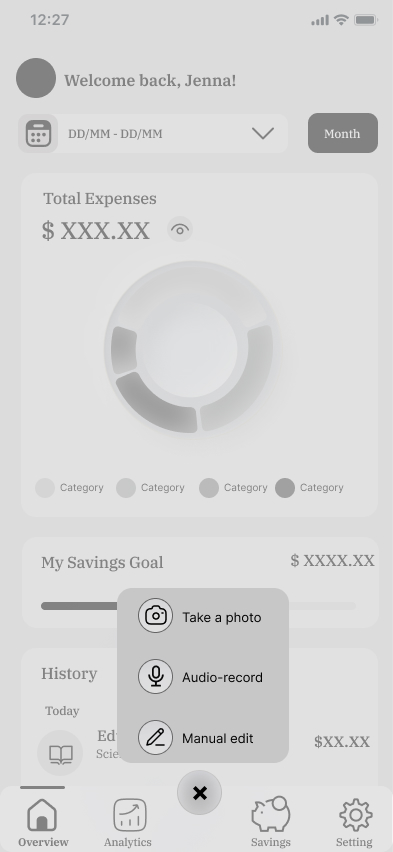
Participants confused decorative elements with controls. The revised home screen removes false affordances and centers photo and voice entry.
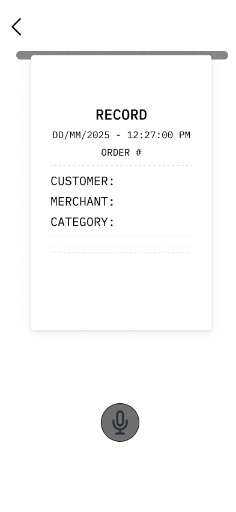
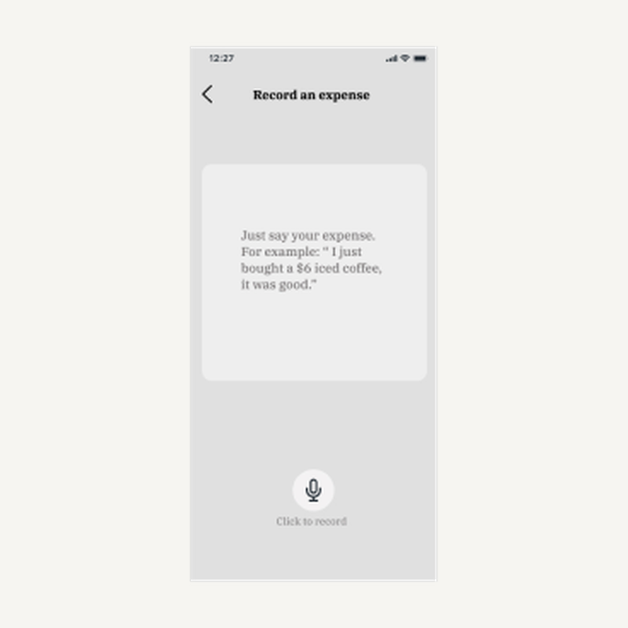
A concrete spoken example reduces hesitation and explains how the app will turn a sentence into expense details.
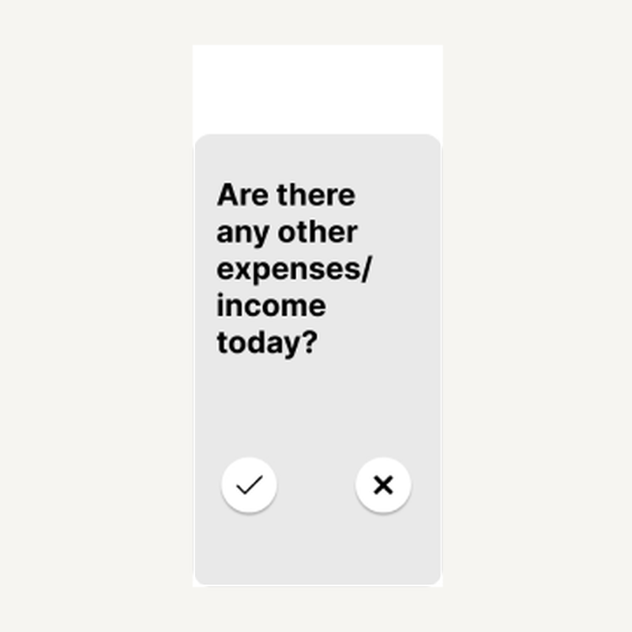
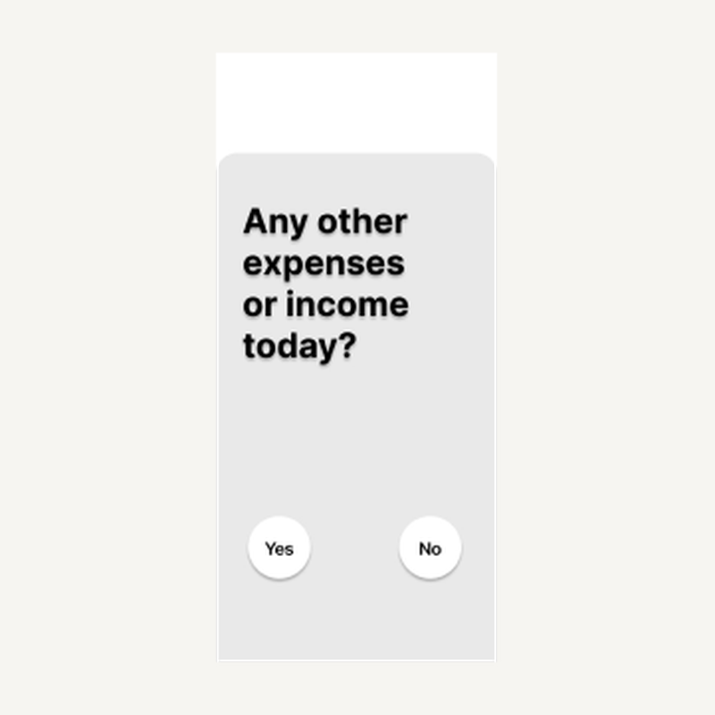
Clear Yes and No language replaces icons whose meaning participants had to infer.
Outcome and reflection
I coordinated a five-person team while contributing across research, synthesis, flow design, prototyping, testing, and iteration.
I connected ten interviews to three recurring patterns and one focused product principle.
I proposed voice input as an additional route after identifying an accessibility gap in photo and manual entry.
I used ten think-aloud sessions to improve expectations, feedback, and confidence across the core task.
Automation reduces effort, but receipt and voice recognition can be inaccurate, financial data is sensitive, and speech is not suitable in every context. A next iteration would test correction effort, privacy expectations, and the manual fallback earlier with rough prototypes.